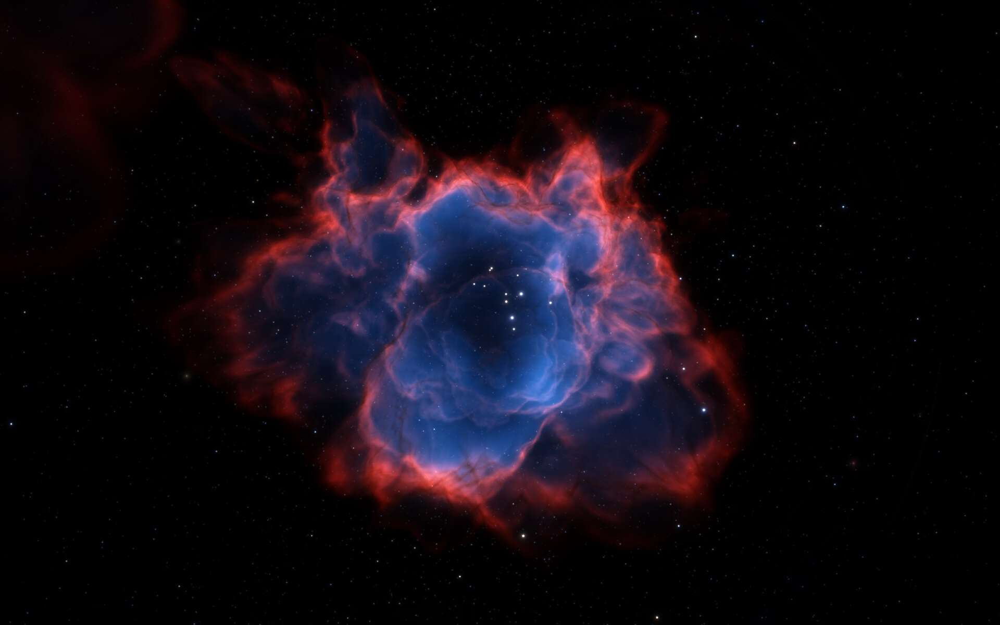

calendar_clock Outubro 09, 2023 ás 10:36
Saiba um pouco mais sobre a poeira cósmica, as nuvens de partículas de material sólido que flutuam pelo espaço
 A astronomia está repleta de elementos fantásticos e de grandes dimensões, como estrelas, nebulosas,
planetas e galáxias. Porém, nem só desses itens é formado o Universo, que também conta com componentes
bastante pequenos.
É o caso da poeira cósmica, um véu que permeia o Cosmos formado por corpos tão pequenos quanto grãos de
areia, com minúsculas partículas sólidas que flutuam no espaço interestelar.
Mesmo com seu tamanho minúsculo perto de outras estruturas espaciais, a poeira cósmica tem uma grande
importância para a astronomia, como o espalhamento e bloqueio da luz. Conheça mais sobre essa incrível
formação, em seguida.
A poeira cósmica é formada por partículas sólidas, como silicato e fragmentos de carbono, além de restos
de explosão solar, formação de estrelas ou de cometas e asteroides. Só é possível observá-la através de
microscópio, uma vez que seu tamanho não passa de um mícron (milésima parte do milímetro) de diâmetro.
Seu ciclo começa nas estrelas, onde ela é formada, para depois ser soprada por algum tipo de explosão
estelar. Os grãos se misturam com gás espacial, e acabam formando grandes ou pequenas nuvens de gás,
chamadas de nebulosas.
Não é fácil detectar a poeira cósmica, já que a atmosfera terrestre é opaca à radiação das ondas da
poeira, não sendo possível visualizar as luzes infravermelhas dessas nuvens de dentro do planeta.
Porém, os astrônomos contam com uma variedade de técnicas para estudar os grãos celestiais, como
observações em diferentes faixas do espectro eletromagnético, e instrumentos que permitem a visualização
das luzes infravermelhas.
Sua importância na astronomia é imensa, já que ela serve como uma espécie de arquivista cósmico,
mantendo preservadas pistas sobre a formação de estrelas, planetas e até mesmo a evolução química do
universo.
A Nebulosa da Água-viva (IC 443) é um remanescente de supernova (SNR) na constelação de Gêmeos – Astronomy Photographer of the Year — Foto: Peter Larkin
A poeira cósmica também desempenha um papel fundamental na formação de sistemas planetários, e na
absorção e dispersão da luz estelar, implicando de forma direta na nossa capacidade de observar e
entender o universo a nossa volta.
Além de ser responsável pelo espalhamento e bloqueio da luz, a poeira ajuda no equilíbrio da
temperatura, impactando na criação de novas estrelas, e também pode facilitar a formação de moléculas.
Ela também é essencial na vida de estrelas jovens, já que auxilia o corpo celeste a tomar forma. O
material cru da poeira cósmica também é usado por planetas para ganhar formato no espaço.
Recentemente, uma pesquisa comprovou que o astrofísico Carl Sagan estava certo ao dizer que os humanos
são feitos de poeira de estrela. Após analisar 1500 estrelas, astrônomos chegaram à conclusão de que,
tanto os seres humanos, quanto os astros brilhantes, possuem 97% do mesmo tipo de átomos.